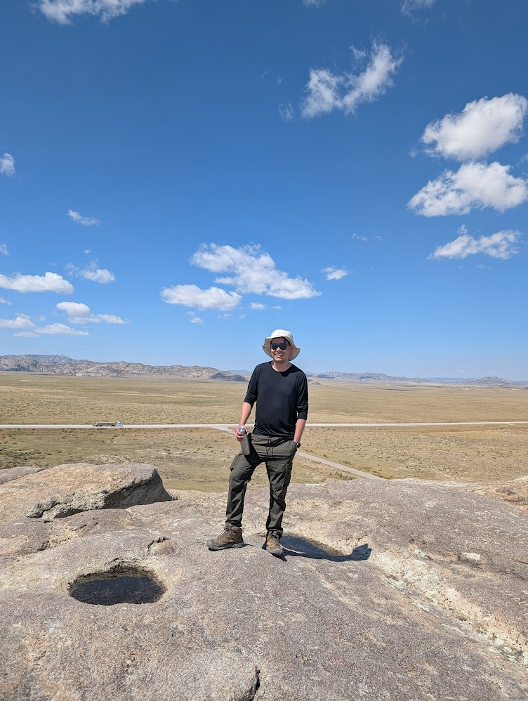

About Me
I am a **Postdoctoral Research Associate** in the Department of **Geology & Geophysics** at the **University of Wyoming**. I successfully defended my Ph.D. in Earth and Environmental Science from New Mexico Institute of Mining and Technology in July 2025.
My current postdoctoral work focuses on the **"Critical Mineral Mobility in Geothermal Reservoirs,"** investigating the behavior of elements like lithium and rare earths in high-temperature brines. This research has dual applications for geothermal energy and carbon storage (CCUS) strategies.
My doctoral research, supervised by Dr. Alexander Gysi, focused on the experimental and thermodynamic modeling of Rare Earth Elements (REE). Specifically, my dissertation investigated the **speciation of Nd hydroxyl and chloride complexes in hydrothermal aqueous fluids** using calorimetry and solubility experiments.
My background combines a B.Sc. in Chemical Engineering from the University of San Simon, Bolivia, with an M.Sc. in Geology from the University of Iceland, where I specialized in Renewable Energy and the geochemistry of geothermal fluids.
Education
-
Ph.D., Earth and Environmental Science New Mexico Institute of Mining and Technology, USA 2021 - 2025
-
M.Sc., Geology (Specialization in Renewable Energy and Geochemistry) University of Iceland, Iceland 2019 - 2021
-
B.Sc., Chemical Engineering University of San Simon, Bolivia 2008 - 2013
Research
Postdoctoral Research (Current)
My current postdoctoral research at the University of Wyoming is titled: **"Critical Mineral Mobility in Geothermal Reservoirs: Implications for Energy Transition and Subsurface Monitoring"**.
The purpose is to quantify and model the behavior of critical minerals (such as Li, REEs, and Sr) in geothermal and CO2-injected systems. This work addresses challenges in both geothermal energy and carbon storage, such as mineral scaling, corrosion, and fluid-rock alteration. The research aims to deliver dual benefits: enabling co-production of minerals and heat in geothermal systems, while also providing novel geochemical tracers for monitoring CO2 plumes and managing produced water in CCUS and oil & gas operations.
Key Objectives:
- Determine how temperature, pressure, salinity, and fluid chemistry influence REE and Li solubility in geothermal brines.
- Quantify the partitioning of REEs, Li, and Sr into common scale phases (e.g., CaCO3, BaSO4, amorphous silica).
- Assess the potential of REE signatures as natural tracers for fluid pathways and CO2 plume migration.
- Develop validated thermodynamic and reactive-transport models (using tools like PHREEQC and TOUGHREACT) to predict critical element mobility from the lab to reservoir scale.
Doctoral Research
My Ph.D. dissertation at New Mexico Tech was titled: **"Speciation of Nd hydroxyl and chloride complexes in hydrothermal aqueous fluids: Calorimetry, solubility experiments and thermodynamic modeling"**. This work provided fundamental thermodynamic data for understanding the transport and deposition of critical rare earth elements in geological systems.
Supervisor: Dr. Alexander Gysi
Master's Thesis
At the University of Iceland, my M.Sc. thesis was titled: **"The geochemistry of geothermal fluids of Ölkelduháls and Hveragerði geothermal areas, SW Iceland"**.
Supervisors: Dr. Andri Stefánsson, Finnbogi Óskarsson
Key Research Interests
- Hydrothermal geochemistry and experimental geochemistry
- Thermodynamic modeling of fluid-rock interactions and mineral deposit formation
- Rare earth elements (REE) and critical minerals
- Geothermal Energy and Renewable resources
- Environmental applications of aqueous geochemistry
- Carbon Capture, Utilization, and Storage (CCUS)
Publications
Articles in Peer-Reviewed Journals
- Hydrothermal solution calorimetry in acidic aqueous solutions and revisiting the standard partial molal thermodynamic properties of Nd3+ from 25 to 300°C. Geochimica et Cosmochimica Acta (in press). DOI: 10.1016/j.gca.2024.07.014
Articles in Preparation
- Constraints on the thermodynamic properties of Nd3+ and Nd chloride species from hydrothermal solution calorimetric experiments between 25 and 150°C. Chemical Geology (in preparation).
- The solubility of Nd(OH)3(s) in hydrothermal acidic aqueous solutions from 25 to 250°C. Chemical Geology (in preparation).
Theses and Dissertations
- The geochemistry of geothermal fluids of Ölkelduháls and Hveragerði geothermal areas, SW Iceland. M.Sc. Dissertation, University of Iceland (2021).
- Geochemical and isotopic characteristics of Laguna Colorada geothermal area - SW Bolivia. Geothermal training in Iceland (16) 229-256 (2018).
- Technical and economical requirements for a geosciences laboratory in Bolivia. Thesis dissertation, University of El Salvador (2016).
Experience
Research & Teaching Appointments
-
Post Doctoral Research Associate Department of Geology & Geophysics, University of Wyoming 2025 - Present
- Research Assistant Ore Deposits and Critical Minerals experimental laboratory, New Mexico Bureau of Geology and Mineral Resources 2021 - 2025
- Research Assistant Geochemical laboratory, Icelandic Geosurvey 2019 - 2021
- Instructor (Physical Chemistry, Thermodynamics 1) University of San Simon 2014 - 2015
- Research Assistant Water Quality laboratory, University of San Simon 2012 - 2013
- Teaching Assistant (Physical chemistry lab, Chemistry lab) University of San Simon 2009 - 2010
Professional Experience
- Geochemist technician Bolivian Electricity Company (Bolivia) 2015 - 2019
- Academic coordinator University of San Simon (Bolivia) 2014 - 2016
- Chemist technician Asientos Mines (Bolivia) 2013 - 2014
Honors & Fellowships
- Wycoff Memorial Scholarship Ph.D. Studentship 2023
- Geothermal Training Program Research Fellowship University of Iceland 2018
- Knowledge Co-Creation Program Fellowship in Renewable Energy Japan International Cooperation Agency 2016
- Postgraduate Diploma in Geothermal Energy University El Salvador 2016
- Academic excellence recognition B.Sc. University of San Simon 2013
Contact
I am always open to discussing new research, collaborations, and opportunities.
Email: yfiguero@uwyo.edu
University Profile: https://www.uwyo.edu/geolgeophys/people/researchers/index.html
Office Address:
Department of Geology & Geophysics
University of Wyoming
Laramie, WY 82071, United States